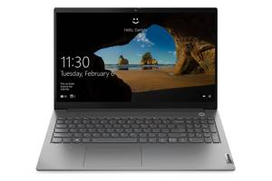

لپ تاپ ThinkBook 15 G2 ITL جزء سریهای میانرده شرکت لنوو قرار دارد که در سال 2021 رونمایی شده و مجهز به پردازندههای نسل 11 شرکت اینتل است. این لپتاپ با تلفیقی از دو سری ThinkPad و IdeaPad ساخته شده است یعنی در کنار ظرافت و زیبایی به ارث برده از سری IdeaPad، استحکام سری ThinkPad را نیز یدک میکشد. استفاده از ترکیب فلز و پلاستیک بسیار باکیفیت باعث شده تا ضخامت این لپتاپ 18.9 میلیمتر و و وزن آن 1.7Kg باشد که اعدادی فوقالعاده برای یک لپتاپ 15.6 اینچ محسوب میشوند. تفاوت اینلپ تا با سری ThinkBook 15 در طراحی قابپشتی و پردازنده جدیدتر است. این لپتاپ دارای حافظه 1 ترابایت از نوع هاردیسک به همراه 256 گیگابایت حافظه از نوع SSD (درایو حالت جامد) (Solid State Drive) بوده و میتواند ظرفیت ذخیرهسازی بالایی را به شما هدیه دهد. لپ تاپ 15.6 اینچی لنوو مدل ThinkBook 15 با پردازنده مرکزی i5 مناسب مصارف روزمره و عمومی و سطح بالا است. ThinkBook 15 دارای کیفیت تصویر Full HD بوده و درون خود یک رم 8 گیگاباتی را یدک میکشد.
86.000.000
84.900.000تومان
خرید محصول